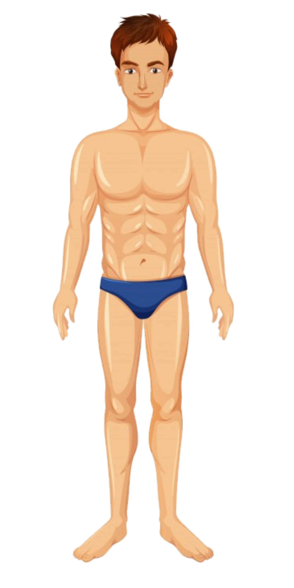
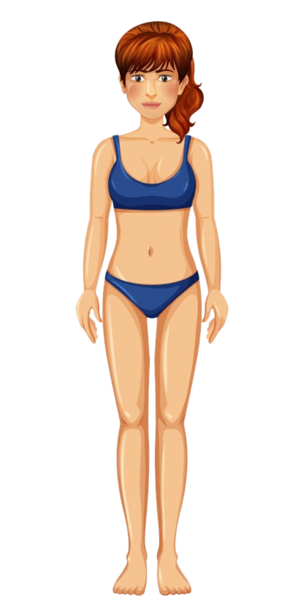

<ion-content padding class="fundo">
  <h1 text-center>Avaliação Corporal</h1>
  
  
  <button ion-button block class="btn" color="amarelo1" style="margin-top:20px; width:85%; display:block; margin-left:auto; margin-right:auto" (click)="continuar()">Iniciar avaliação</button>
  <button ion-button full no-border no-lines outline class="btn-voltar" (click)="voltar()">Voltar</button>
</ion-content>
